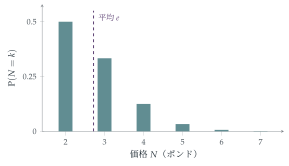

STEP I 1996、第13問
先に進む前に問題を読んでおこう。問題は STEP Support Programme の問題データベースにある： step.maths.org/questions/96-s1-q13
導入
切手の一風変わった売り方である。買い手はどのカップの下に切手が隠れているかを当て続け、カップは1回ごとに1個ずつ増えていく。そして初めて外したとき、テーブルの上にあるカップ1個につき1ポンドを支払う。平均すると支払額は \(\pounds e\)、すなわち約 \(\pounds 2.72\) になる。
数 \(e\) は確率の中で不思議なほど頻繁に現れる。誰も自分のシャツを受け取らない確率（第 9.8 節）、秘書問題（secretary problem、第 12.12 節）、ポアソン分布（Poisson distribution）などである。この問題は \(e\) が現れる例の中でおそらく最も単純なものであり、しかも別の有名なパズルとまったく同じ分布をもつことがわかる。そのパズルとは、「\(0\) と \(1\) の間の乱数をいくつ足せば合計が \(1\) を超えるか」というものである。平均すると、\(e\) 個である。
取りかかる前に
\(N = 4\) となるには何が起こらなければならないか。その確率はいくらか。
ジムはカップが \(2\) 個のとき（確率 \(\frac12\)）と \(3\) 個のとき（\(\frac13\)）に正しく当て、カップが \(4\) 個のときに外さなければならない（\(\frac34\)）。よって \(\mathrm{P}(N = 4) = \frac12\cdot\frac13\cdot\frac34 = \frac{3}{4!} = \frac18\) である。
順を追って解く
段階 1 分布
\(N = k\)（ただし \(k \geq 2\)）となるのは、ジムがカップ \(2, 3, \ldots, k - 1\) 個のときに当て、\(k\) 個のときに外す場合である。 \[\mathrm{P}(N = k) = \frac12\cdot\frac13\cdots\frac{1}{k - 1}\cdot\frac{k - 1}{k} = \frac{k - 1}{k!}.\] （確認：\(\frac{1}{2!} + \frac{2}{3!} + \frac{3}{4!} + \cdots = \sum_{k \geq 2}\bigl(\frac{1}{(k-1)!} - \frac{1}{k!}\bigr) = 1\) であり、これは隣り合う項が打ち消し合う和（telescoping sum）である。）
段階 2 期待値
\(k\cdot\frac{k - 1}{k!}\) を簡単にせよ。どのような級数が得られるか。
\[\mathrm{E}(N) = \sum_{k \geq 2}\frac{k(k - 1)}{k!} = \sum_{k \geq 2}\frac{1}{(k - 2)!} = \frac{1}{0!} + \frac{1}{1!} + \cdots = e. \qed\]
段階 3 分散
\(k^2 = k(k - 1) + k\) と書くか、\(\frac{k^2(k-1)}{k!}\) を直接簡単にすることで、\(\mathrm{E}(N^2)\) を求めよ。
\[\mathrm{E}(N^2) = \sum_{k \geq 2}\frac{k^2(k - 1)}{k!} = \sum_{k \geq 2}\frac{k}{(k - 2)!} = \sum_{j \geq 0}\frac{j + 2}{j!} = \sum_{j \geq 1}\frac{1}{(j - 1)!} + 2\sum_{j \geq 0}\frac{1}{j!} = e + 2e = 3e.\] よって \(\mathrm{Var}(N) = 3e - e^2 = e(3 - e) \approx 0.766\) である。■

振り返り
確率の積。独立な成功が続いた後に失敗が1回起こる、という事象の確率は積で表され、それが \(\frac{k-1}{k!}\) という簡単な形にまとまった。
階乗を約分する。\(k\) や \(k^2\) を掛けて約分することで、和が指数級数（exponential series）に変わった。
添字をずらして \(\mathrm{E}(N^2)\) を求める。\(j = k - 2\) と添字を付け替えることで、和が \(e\) 二つ分に分かれた。
背後にある数学
姿を変えた同じ分布
乱数 \(U_1, U_2, \ldots\) を \([0, 1]\) から一様に（uniformly）選び、それらの和が \(1\) を超えるのに必要な個数を \(M\) とする。最初の \(k\) 個の数の和が \(1\) 未満となる確率は、領域 \(\{u_1 + \cdots + u_k < 1, u_i \geq 0\}\) の体積に等しく、それは \(\frac{1}{k!}\) である（面積 \(\frac12\) の三角形、体積 \(\frac16\) の四面体、以下同様）。したがって \[\mathrm{P}(M > k) = \frac{1}{k!}, \qquad \mathrm{P}(M = k) = \frac{1}{(k - 1)!} - \frac{1}{k!} = \frac{k - 1}{k!},\] となり、これは \(N\) の分布とまったく同じである。どちらの問題でも \(\mathrm{P}(N > k) = \frac{1}{k!}\) が成り立つ。カップの問題では、これは \(k - 1\) 回続けて正しく当てる確率である。\(\mathrm{E}(N) = \sum_{k \geq 0}\mathrm{P}(N > k)\)（第 9.9 節 の公式）を用いれば、1行で \(\mathrm{E}(N) = \sum\frac{1}{k!} = e\) が得られる。
なぜ \(e\) は繰り返し現れるのか
確率に \(\frac{1}{k!}\) が含まれるときはいつでも、それが \(k\) 個のものが特定の順序に並ぶことから来るのであれ、確率 \(\frac12, \frac13, \ldots\) の \(k\) 個の事象が続けて起こることから来るのであれ、単体（simplex）の体積から来るのであれ、\(k\) についての和は指数級数を生み出す。完全順列（derangements、第 9.8 節）では \(\sum\frac{(-1)^k}{k!} = e^{-1}\) が得られた。ここでは \(\sum\frac{1}{k!} = e\) である。そして、起こりにくい独立な事象が多数あることから生じる \(\bigl(1 - \frac1n\bigr)^n \to e^{-1}\) という形の極限が、秘書問題やポアソン分布に \(e\) が現れる理由を説明している。
「和が \(1\) を超える」問題を使えば、実験によって \(e\) を推定することができる。乱数を生成し、\(1\) を超えるのに何個必要かを数え、これを何度も繰り返して平均をとればよい。これは \(\pi\) を推定するビュフォンの針（Buffon’s needle、第 12.20 節）の親戚である。このようなモンテカルロ法（Monte Carlo methods）は、カジノの名にちなんで名付けられたもので、直接計算するのが難しい量を無作為抽出によって推定する。現在では素粒子物理学から金融に至るまで科学のあらゆる分野で使われており、その多くは多次元の積分の計算に用いられている。
思考のスキル
期待値が階乗を含む和で表されているときは、標準的な級数（指数級数、等比級数、二項級数）が現れるまで各項を簡単にせよ。
大学では、母関数（generating functions）がこの手法を体系化する。確率母関数（probability generating function）\(\mathrm{E}(t^N)\) は分布全体をひとまとめにしたものであり、\(t = 1\) におけるその導関数から平均と分散が得られる。
次の一歩
母関数。\(\mathrm{E}(t^N) = 1 + (t - 1)e^t\) を示し、それを用いて \(\mathrm{E}(N)\) と \(\mathrm{E}(N(N - 1))\) を求めよ。
裾の公式。非負整数値をとる確率変数（random variable）について \(\mathrm{E}(N) = \sum_{k \geq 0}\mathrm{P}(N > k)\) が成り立つことを証明し、それを用いて1行で \(\mathrm{E}(N)\) を求めよ。
カップ1個から始める。ゲームがカップ1個（ジムが外すことはありえない）から始まるとすると、分布はどう変わるか。価格の期待値はいくらか。
単体。\(\{u_1 + u_2 + u_3 < 1, u_i \geq 0\}\) の体積が \(\frac16\) であることを示し、数学的帰納法（induction）を用いて \(k\) 次元の場合の体積が \(\frac{1}{k!}\) であることを示せ。
さらに学ぶために
Eli Maor, e: The Story of a Number（Princeton University Press）。\(e\) の歴史を、確率における登場例も含めて解説している。
Geoffrey Grimmett & Dominic Welsh, Probability: An Introduction（Oxford University Press）。母関数について。
Paul Nahin, Digital Dice（Princeton University Press）。モンテカルロ・シミュレーションによって解かれる確率パズル集。